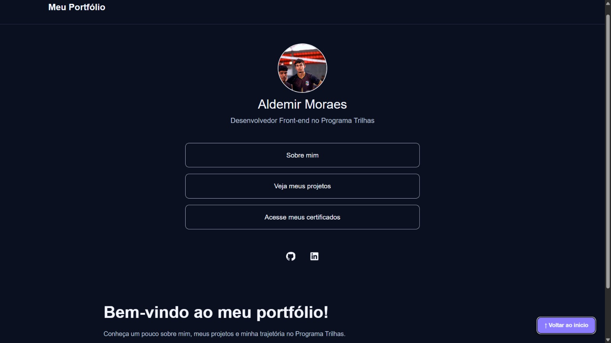
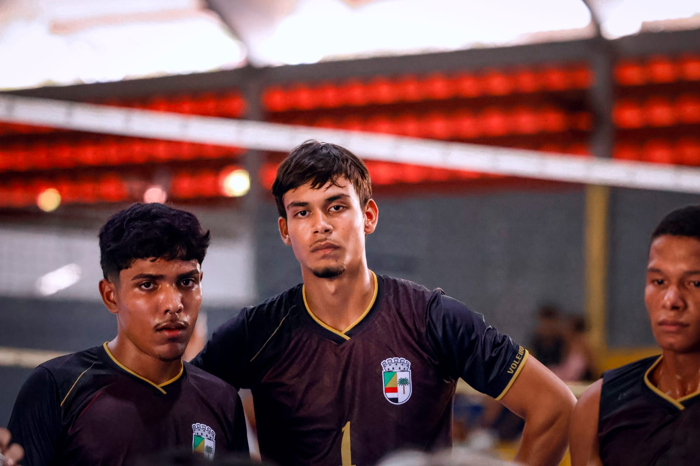

Meu primeiro portfólio
Meu primeiro projeto de desenvolvimento Front-end, criado com HTML, CSS e JavaScript durante o Programa Trilhas.
Projeto em desenvolvimento
Desenvolvedor Front-end no Programa Trilhas
Conheça um pouco sobre mim, meus projetos e minha trajetória no Programa Trilhas.
Olá! Estou aprendendo desenvolvimento web no Programa Trilhas. Tenho interesse em tecnologia, programação e criação de projetos. Meu objetivo é desenvolver minhas habilidades e criar soluções úteis.

Meu primeiro projeto de desenvolvimento Front-end, criado com HTML, CSS e JavaScript durante o Programa Trilhas.
Projeto em desenvolvimentoAqui vou reunir os certificados dos cursos e das atividades que concluir durante minha formação.